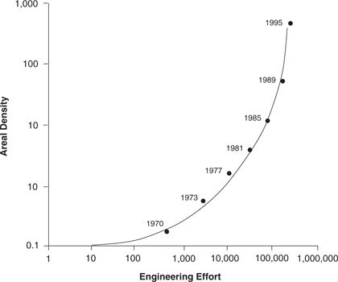
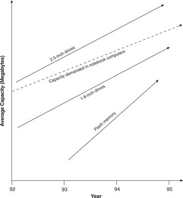

The value network framework asserts that none of the foregoing frameworks is a sufficient predictor of success. Specifically, even where established firms did not possess the requisite technological skills to develop a new technology, they would marshal the resources to develop or acquire them if their customers demanded it. Furthermore, the value network suggests that technology S-curves are useful predictors only with sustaining technologies. Disruptive technologies generally improve at a parallel pace with established ones—their trajectories do not intersect. The S-curve framework, therefore, asks the wrong question when it is used to assess disruptive technology. What matters instead is whether the disruptive technology is improving from below along a trajectory that will ultimately intersect with what the market needs.
Figure 2.7 Improvements in Areal Density of New Disk Drives (Densities in Millions of Bits per Square Inch)

Source: Data are from various issues of Disk/Trend Report.
The value network framework would assert that even though firms such as Seagate and Quantum are able technologically to develop competitive flash memory products, whether they invest the resources and managerial energy to build strong market positions in the technology will depend on whether flash memory can be initially valued and deployed within the value networks in which the firms make their money.
As of 1996, flash memory can only be used in value networks different from those of the typical disk drive maker. This is illustrated in Figure 2.8, which plots the average megabytes of capacity of flash cards introduced each year between 1992 and 1995, compared with the capacities of 2.5-and 1.8-inch drives and with the capacity demanded in the notebook computer market. Even though they are rugged and consume little power, flash cards simply don’t yet pack the capacity to become the main mass storage devices in notebook computers. And the price of the flash capacity required to meet what the low end of the portable computing market demands (about 350 MB in 1995) is too high: The cost of that much flash capacity would be fifty times higher than comparable disk storage. 23
Figure 2.8 Comparison of Disk Drive Memory Capacity to Flash Card

Source: Data are from various issues of Disk/Trend Report.
The low power consumption and ruggedness of flash certainly have no value and command no price premium on the desktop. There is, in other words, no way to use flash today in the markets where firms such as Quantum and Seagate make their money.
Hence, because flash cards are being used in markets completely different from those Quantum and Seagate typically engage—palmtop computers, electronic clipboards, cash registers, electronic cameras, and so on—the value network framework would predict that firms similar to Quantum and Seagate are not likely to build market-leading positions in flash memory. This is not because the technology is too difficult or their organizational structures impede effective development, but because their resources will become absorbed in fighting for and defending larger chunks of business in the mainstream disk drive value networks in which they currently make their money.
Indeed, the marketing director for a leading flash card producer observed, “We’re finding that as hard disk drive manufacturers move up to the gigabyte range, they are unable to be cost competitive at the lower capacities. As a result, disk drive makers are pulling out of markets in the 10 to 40 megabyte range and creating a vacuum into which flash can move.” 24
The drive makers’ efforts to build flash card businesses have in fact floundered. By 1995, neither Quantum nor Seagate had built market shares of even 1 percent of the flash card market. Both companies subsequently concluded that the opportunity in flash cards was not yet substantial enough, and withdrew their products from the market the same year. Seagate retained its minority stake in SunDisk (renamed SanDisk), however, a strategy which, as we shall see, is an effective way to address disruptive technology.